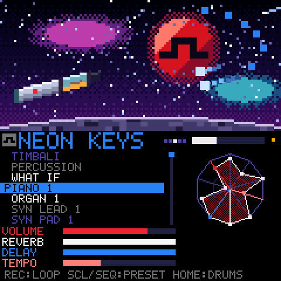

TERMS OF SERVICE × MIZU RECORDS · CHEAT SHEET
BITCH909 AT A GLANCE
A synth and a drum kit to play live, a loop recorder with no grid, effects turned all the way up, a vape, and three games: a coin pusher and a knife board that play music by chance, and a block game. Press a key: it already makes sound.
Drum pads in drum mode (black 1-8 or white 1-8). In synth mode every key plays.OP1 OP2 OP3: together, the coin pusherOP4 OP5: together, the knivesOP6 PIT GLO: together, Tide Blocks
GETTING AROUND
tap HOME
Swap the keys between the synth and the drum kit.
tap SEQ
Next synth preset. SCL is the previous one.
turn SELECT
Scroll the preset list. ALGORITHM and PRESETS do the same.
tap FX
Put the four knobs on the effects. Tap again to go back.
tap ENV
Put the four knobs on the vape. Tap again to go back.
press OP6 + PIT + GLO
Tide Blocks, a falling-block game. The same three keys leave.
hold FX
The master effects window.
press OP1 + OP2 + OP3
The coin pusher. The same three keys, or HOME, leave.
PLAYING
any key
Synth: all 27 keys play, F3 to G5.
tap OCT +
Synth: up an octave. OCT- goes down. Five dots show where you are.
black key 1-8
Drums: BD SD CH OH CP RS TM CR. White keys 1-8 are the same pads.
tap ARP
Drums: repeat. A held pad retriggers in time. Four rates, then off.
hold ARP
One second: swap between the FM-1's own tempo and MIDI clock.
turn MASTER
Output volume.
LOOP
tap REC
Start recording what you play into a four-bar loop. Starts the loop if it was stopped.
tap REC again
Keep the loop and carry on playing over it.
hold REC
Three seconds: delete everything, synth and drums.
tap PLAY
Start or stop the loop.
tap HOME + tap REC
Record the other one on top: the loop takes whichever of synth or drums the keys are on.
SOUND
turn KNOB 1-4
Synth: volume, reverb, delay, tempo. Drums: level, tune, decay of the last pad you hit, tempo.
tap FX + turn KNOB 1-4
Reverb send, delay send, delay feedback, effects level.
tap SAVE
Store the sound settings and the loop.
VAPE
tap ENV + turn KNOB 1
Smoke, from a thin plume to a cloud over the whole screen.
turn KNOB 2
How fast the cloud rolls.
turn KNOB 3
Max: the screen fills with smoke.
turn KNOB 4
Clear: the smoke is gone at once.
COIN PUSHER
press OP1 + OP2 + OP3
Open it. Coins pile up, the plate shoves them, and they spill over the front.
any key
Drop a coin above that key.
coin falls
Plays a synth note chosen by the slot it lands in, low on the left, high on the right. Always in the scale.
turn KNOB 1
Smoke: how far each fall can push the smoke, and the effects with it.
turn KNOB 2
Scale: minor or major pentatonic, Hijaz, Hijaz Kar, Kurd, Nahawand, Bayati, Rast, Saba.
turn KNOB 3
How many coins the table holds.
turn KNOB 4
Speed of the machine and the falling coins.
tap SEQ
Change the preset the coins play. SCL goes back.
tap HOME
Leave.
KNIVES
press OP4 + OP5
Open it. A spinning target darts around the wall. Send your own picture for it from the pictures page.
any key
Throw a knife straight up from above that key. Time it: the target does not wait.
bullseye
A run of ten notes, crash and kick, and the picture tears.
inner ring
A rising figure of five notes and a clap.
outer rings
One note, sometimes two, and a drum.
miss
A rim shot as the knife clatters off.
turn KNOB 1
Smoke, as in the coin pusher.
turn KNOB 2
Scale, the same list. Everything a hit plays stays in it.
turn KNOB 3
Size of the target.
turn KNOB 4
How fast the target moves.
tap HOME
Leave.
TIDE BLOCKS
press OP6 + PIT + GLO
Open the falling-block game. The same three keys leave.
tap OCT +
Move the piece right. OCT- moves it left. SELECT turns do the same.
tap SEQ
Turn the piece.
tap REC
Drop it. After a wipeout, REC starts again.
full row
Clears and counts as a line. It speeds up as you go.
tap PLAY
Start or stop your loop underneath while you play.
MASTER FX
hold FX
Open the master effects: twelve of them on the whole mix. Hold FX again, or tap HOME, to go back.
hold white key 1-12
That effect for as long as you hold it.
tap black key 1-11
Latch that effect on, or off. Latched effects stay on when you go back to playing; FX blinks.
1-4
Crush, downsample, drive, fold.
5-8
Ring, chop, stutter, reverse.
9-12
Lowpass, highpass, freeze (the delay feeds itself), warp (the delay time lurches).
turn KNOB 1
Depth: how hard.
turn KNOB 2
Rate: how fast, how long, how low.
tap PLAY
The loop keeps running underneath; PLAY and REC still work.
CONNECTING
tap GLO
Show the Bluetooth MIDI link.
hold GLO
One second: close the link, or swap between waiting for a phone or computer and searching for a controller.
MIDI in
Channel 1 plays the synth, channel 10 the drums.
READING THE SCREEN
orbits
The loop. Drums on the inner orbit, synth on the outer. A moon is a recorded step; the comet is where the loop is.
radar
Ten controls as one shape. The four coloured spokes are the knobs in your hands.
bars
KNOB 1-4: what each one is and how far it is turned.
top right
Tempo as a bar: longer is faster.
GOOD TO KNOW
- The welcome screen stays four seconds, fills with smoke, then clears over the first screen. Touch anything to skip it.
- There are no numbers on the screen. Turn a knob and watch its bar and the radar move.
- Reverb and delay start turned all the way up, every time the FM-1 boots. Pull them back with FX and the knobs.
- With the effects already full, smoke changes the picture more than the sound. Turn the effects down first to hear it work as a macro.
- The black keys, left to right, are OP1 to OP6, then PIT and GLO. Press a chord together, not one key after another.
- The drums play the sample bank on the device. Write the built-in samples from the install page to get the 909 kit.
- Your own picture behind the screen, or as the knife target: use the pictures page.